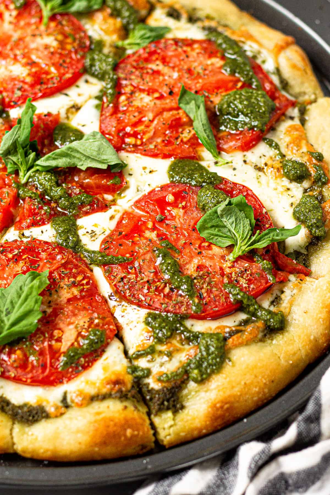

Pesto Pizza

Decription
This pesto pizza recipe is better than take-out and comes together in less than 20 minutes! Use refrigerated pizza dough from the store or my quick and easy pizza dough recipe along with all those ripe tomatoes and overgrown basil from the garden!
Ingredients
- Pizza Crust
- Fresh Pesto
- Mozzarella Chees
- Fresh Tomatoes
- Fresh Basil
Steps
- Roll dough out into a 12-14 inch crust. Transfer to a pizza pan (I HIGHLY recommend this one). Poke the crust all over with a fork and brush with olive oil.
- Par-bake crust for 3-5 minutes. See how nice and golden brown this pan helps the crust get?! If there is one pan you invest in - let it be this one! Also - it's actually super inexpensive so it's worth every penny!!
- While the crust is par-baking, throw together my super easy basil pesto (which can be made with pine nuts or walnuts)!
- Remove from the oven and spread pesto across the crust, leaving about an inch around the perimeter.
- Sprinkle mozzarella cheese evenly across the pizza.
- Place tomatoes on top of the cheese. Sprinkle oregano across the pizza as well as a large pinch of Kosher salt. Brush crust with more olive oil.
- Bake for 8-10 minutes or until the cheese is melted and the crust is dark golden brown.